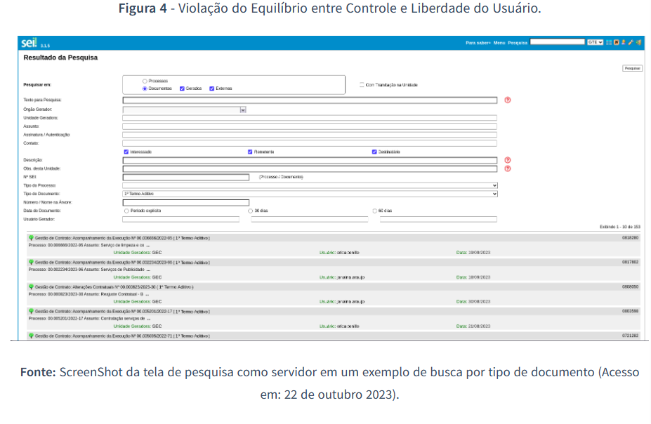
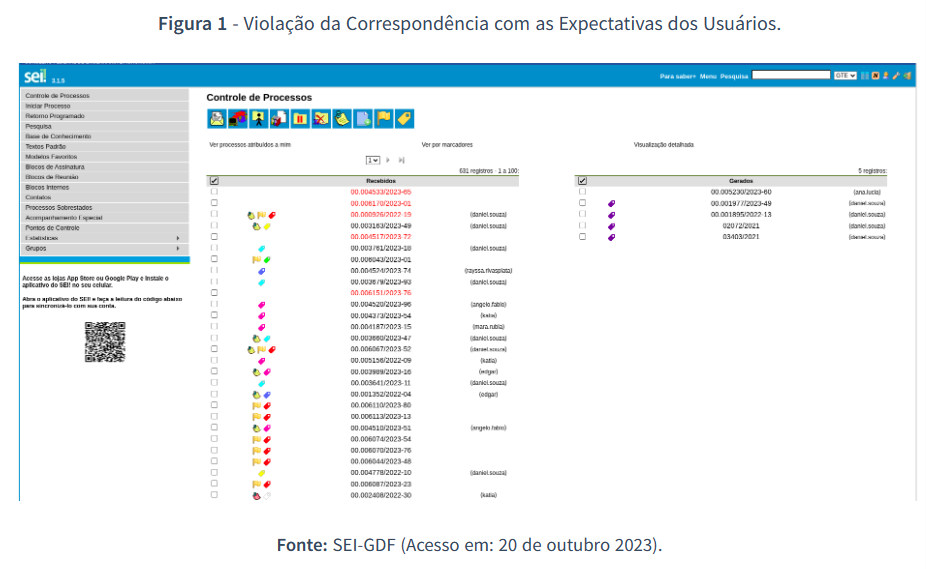

Verificação dos Princípios Gerais do Projeto
Introdução
Após realizado o planejamento geral de como serão realizadas as verificações da etapa 3, neste artefato será produzido de fato a verificação dos Princípios Gerais do Projeto.
Dessa forma, inicialmente serão apresentados os objetivos dessa verificação, a metodologia utilizada para sua realização, os responsáveis por realizá-la e as respostas dos checklists apresentados no planejamento da etapa 3. Além disso, será desenvolvida uma análise e posterior levantamento dos problemas identificados após o respectivo checklist. Sendo assim, a partir das principais incoerências encontradas, será possível trazer sugestões e avaliar a necessidade de retrabalho.
Objetivo
O objetivo deste documento é relatar os resultados das verificações realizadas no que tange o artefato Princípios Gerais do Projeto da Etapa 3 do Grupo 8.
Metodologia
Os resultados da análise deste artefato foram obtidos através da análise dos checklists de verificação preparados na página de planejamento. Dessa forma, o avaliador irá verificar o respectivo artefato do grupo e responder às questões apresentadas nos checklists, utilizando as opções "Sim", "Não" ou "Incompleto" para as respostas, além de também poder registrar comentários em cada questão analisada para detalhar alguma observação pertinente.
Participantes envolvidos
Conforme explicitado no tópico "Cronograma" do Planejamento da Verificação da Etapa 3, o participante responsável do Grupo 7 e suas respectivas funções são:
- Kallyne Macedo, a qual será responsável por realizar a avaliação;
- Luana Torres, a qual será responsável por realizar a revisão do artefato produzido pelo avaliador.
Sumário Dos Dados - Checklists
A Tabela 1 apresenta o Checklist Geral com os dados obtidos a partir da verificação de aspectos gerais que os artefatos devem seguir.
Tabela 1 - Checklist para os Itens Gerais.
| ID | Descrição | Avaliação | Observações |
|---|---|---|---|
| 1 | O artefato possui introdução? | SIM | |
| 2 | O artefato possui uma bibliografia/referências bibliográficas? | SIM | |
| 3 | O artefato possui um histórico de versões com o ID e descrição das versões, data, autores e revisores padronizado? | SIM | |
| 4 | Todas as tabelas e imagens são chamadas no texto, possuem legenda e fonte? | INCOMPLETO | As fontes nas figuras de 3 a 12 são legendas. |
| 5 | Todos os textos estão na norma padrão? | INCOMPLETO | Erros de gramática |
| 6 | Os vídeos produzidos estão na categoria "não listado" no youtube? | SIM |
Fonte: Kallyne Macedo, 2023.
Já a Tabela 2 apresenta o checklist referente aos itens exigidos para o relato dos resultados segundo Barbosa e Silva (2011, p.358-362)1 .
Tabela 2 - Checklist para os Princípios Gerais do Projeto
| ID | Questão | Resposta | Comentário |
|---|---|---|---|
| 1 | O artefato identifica quais os Princípios Gerais que serão utilizados no projeto? | SIM | |
| 2 | O artefato apresenta uma avaliação (com fotos e gravações) dos "Problemas encontrados"? | SIM | |
| 3 | O artefato apresenta uma avaliação (com fotos e gravações) das propostas de solução para cada um dos princípios? | INCOMPLETO | Sugestões de alguns itens sem imagem |
| 4 | O artefato apresenta o tópico de correspondência com as expectativas dos usuários? | SIM | |
| 5 | O artefato apresenta o tópico de simplicidade nas estruturas das tarefas? | SIM | |
| 6 | O artefato apresenta o tópico de equilíbrio entre controle e liberdade do usuário? | SIM | |
| 7 | O artefato apresenta o tópico de consistência e padronização; promoção da eficiência do usuário? | SIM | |
| 8 | O artefato apresenta o tópico de antecipação das necessidades do usuário? | SIM | |
| 9 | O artefato apresenta o tópico de visibilidade e reconhecimento? | SIM | |
| 10 | O artefato apresenta o tópico de conteúdo relevante e expressão adequada? | SIM | |
| 11 | O artefato apresenta o tópico de projeto para erros? | SIM |
Fonte: Kallyne Macedo, 2023.
Problemas encontrados
A partir do preenchimento da tabela 1 e 2, a seguir serão realizadas as considerações acerca dos itens mencionados com "NÃO" e "INCOMPLETO".
Tabela 1
ID 4: Todas as tabelas e imagens são chamadas no texto, possuem legenda e fonte?
A partir da figura 3 até a figura 12, as fontes apresentadas nas imagens quebram o padrão de referência anterior e passam a oferecer informações detalhadas sobre a captura de tela feita.
Figura 1 - Exemplo de fonte inadequada

Fonte: Página Princípios Gerais do Projeto, Grupo SEI-GDF (2023)
Figura 2 - Exemplo de fonte padrão

Fonte: Página Princípios Gerais do Projeto, Grupo SEI-GDF (2023)
ID 5: Todos os textos estão na norma padrão?
Foram pontuados erros de gramática e concordância ao longo do texto:
- "Sujestão", na metodologia;
- "dois subtópicos: definição, violação e sujestão de melhoria", na metodologia;
- "propabilidades" e "recentemete", na Antecipação;
- "Relavante", no Conteúdo Relevante e Expressão Adequada.
Tabela 2
ID 3: O artefato apresenta uma avaliação (com fotos e gravações) das propostas de solução para cada um dos princípios?
Os itens "Simplicidade nas Estruturas das Tarefas", "Consistência e Padronização", "Visibilidade e Reconhecimento", "Conteúdo Relevante e Expressão Adequada" e "Projeto de Erros" não apresentam imagens na sugestão de melhoria.
Problemas Gerais
A introdução apresenta diretrizes mas não direciona seu uso no desenvolvimento do texto. Não há explicação do motivo da escolha do formato "definição, violação e sugestão" na metodologia. Todas as âncoras de referência estão com erro de formatação e redirecionam para uma página "404 - Not Found".
Síntese dos dados encontrados
Dessa forma, a partir das respostas coletas nos checklists acima foi possível realizar uma síntese dos dados encontrados em formato de gráfico, conforme pode ser visto na Figura 1.
Figura 3 - Gráfico com resultado das Checklists Geral e dos Princípios Gerais do Projeto
Sugestões de Correções
Por fim, a partir das informações coletadas, apresentadas e analisadas acima, sugere-se realizar as seguintes correções:
- Correção de forma nas referências;
- Revisão gramatical ao longo do texto;
- Inserção de imagens com demonstração das sugestões de melhoria, com fonte e legenda padronizadas;
- Detalhamento da introdução, indicando a aplicação das diretrizes;
- Detalhamento da metodologia, indicando o motivo da escolha dos métodos.
Retrabalho
Para a realização do retrabalho é sugerido que os próprios autores do artefato verificado realizem a correção dos problemas apresentados seguindo a lista de sugestão apresentada no tópico anterior.
Se necessário, outros membros do grupo 8 podem realizar as correções propostas, porém, deve-se informar a mudança realizada na Tabela 3 pois selecionou-se exatamente o responsável por essa página de acordo com a tabela do Histórico de Versões.
O responsável do grupo 7 por essa verificação irá realizar uma revisão das correções feitas, verificando se as correções foram executadas com exatidão. Assim que todas as alterações forem implementadas, deve-se alterar o campo "Status" da Tabela 3 apresentada a seguir de "Em análise" para "Finalizado".
Tabela 3 - Cronograma de Retrabalho.
| Data de Correção | Descrição | Responsável(eis) | Revisor(es) | Status |
|---|---|---|---|---|
| 20/11/2023 | Realizar os ajustes da verificação | Felipe de Sousa | Lucas Caldas | Em análise |
Fonte: Kallyne Macedo, 2023.
Bibliografia
1. BARBOSA, S. D. J.; SILVA, B. S. Interação Humano-Computador. Rio de Janeiro: Elsevier, 2011.
Histórico de Versões
| Versão | Data | Descrição | Autor(es) | Revisor(es) |
|---|---|---|---|---|
1.0 |
15/11/2023 | Criação da página e realização da verificação | Kallyne Macedo | Luana Torres |